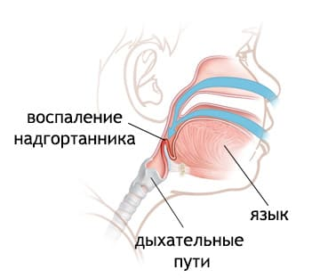
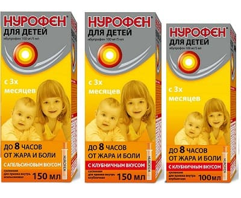

Ваш ребенок болен ОРВИ, во время которого (чаще в вечерние часы) вы слышите грубый сухой кашель, напоминающий лай морского льва, просящего еще рыбы. Если вы раньше слышали «крупозный» кашель, то не ошибетесь. Если у вашего ребенка никогда не было крупа, то это может напугать.
Круп — очень распространенное заболевание, так что лучше быть готовым к этому заранее. Это особенность течения вирусной инфекции, которая встречается у детей первых 5 лет жизни. Она сопровождается отеком голосовых складок, что и вызывает этот «корявый» кашель. Область голосовых складок — самая узкая часть дыхательных путей, и любой отек может сузить их настолько, что затруднит дыхание. Круп обычно длится 5—6 дней и ухудшается ночью. Симптомы обычно достигают пика на вторую-третью ночь. Круп может начаться внезапно или как ОРВИ, постепенно перерастающая в крупозный кашель.
Заразен ли круп? Да, как любая ОРВИ. Для предотвращения распространения инфекции важно тщательно мыть руки.
СИМПТОМЫ
Кроме кашля и симптомов ОРВИ, у вашего ребенка могут быть следующие симптомы:
ПРИЗНАКИ НЕТЯЖЕЛОГО КРУПА
Важно наблюдать за поведением ребенка и развитием крупа. Если ребенок улыбается, доволен, играет, осматривается, проявляет интерес к окружающему и его дыхание явно не затруднено из-за крупа — это хорошие признаки. У него может быть лающий кашель, но без стридора и втяжений. Как окончательное подтверждение: если ваш «лающий» ребенок в состоянии лечь и спать без больших перерывов — скорее всего, его дыхание в безопасности.
СИМПТОМЫ, КОТОРЫЕ ВАМ НЕ ВИДНЫ Если у вашего ребенка помимо вышеописанных симптомов еще сильное слюноотделение, ему тяжело глотать, и он с трудом дышит, это могут быть признаки ЭПИГЛОТТИТА, очень редкой, но опасной для жизни инфекции носоглотки (воспаления надгортанника), протекающей тяжелее, чем круп. Звоните в больницу. |

ПРИЗНАКИ ТЯЖЕЛОГО КРУПА
Вот на что нужно обратить внимание. Ребенок, дыхательные пути которого значительно сужены, выглядит встревоженным, его не интересуют никакие игры или действия, как будто все его силы направлены на то, чтобы дышать. Ребенок не хочет ложиться, он только сидит и кашляет лающим кашлем. У него будут втяжения и стридор. Стридор слышен сильнее, когда ребенок взволнован или кричит, и слабее, когда ребенок мирно отдыхает.
ЛЕЧЕНИЕ
Следует помнить, что круп всегда является причиной для обращения за медицинской помощью! Вызовите врача, позвоните ему! До осмотра врачом постарайтесь сделать следующее:
Останьтесь ночевать в комнате ребенка, чтобы следить за ним, так как возможны еще приступы и потребуется повторить лечебные мероприятия.

КОГДА ОТПРАВЛЯТЬСЯ В ОТДЕЛЕНИЕ НЕОТЛОЖНОЙ ПОМОЩИ
(ИЛИ К ВРАЧУ)
Попробуйте вышеописанные способы лечения и оцените состояние своего ребенка. Если вам кажется, что ему стало лучше (втяжения и стридор уменьшились, щечки, до того бледные, слегка порозовели), внимательно наблюдайте за ребенком и прислушивайтесь к его дыханию.
СОВЕТ ДОКТОРОВ СИРС: БУДЬТЕ ОСТОРОЖНЫ СО СРЕДСТВАМИ ОТ ПРОСТУДЫ Важно! Не давайте ребенку с крупом антигистаминные или противоотечные средства без консультации врача. Они могут высушить дыхательные пути, которые надо увлажнять для расширения. |
Если вы чувствуете, что ребенку становится хуже, несмотря на предпринятые меры, отправляйтесь в отделение неотложной помощи. Ваш врач все равно не сможет лечить это состояние по телефону, так что лучше будет поехать в больницу, вместо того чтобы извещать его и потом ждать ответа.
Если вы заметите у ребенка какой-либо из перечисленных ниже признаков — немедленно везите его в ближайшее отделение неотложной помощи:
Как лечат круп в отделении неотложной помощи. Что сделают в отделении неотложной помощи? Чтобы правильно оценить состояние ребенка, сотрудники отделения будут осматривать его у вас на руках, чтобы ребенок был спокоен. Они могут измерить количество кислорода в его крови с помощью оксиметра или «пульсоксиметра». Для этого используют маленький датчик с источником света, который надевается на палец руки или ноги и помогает определить, достаточно ли кислорода получает ребенок. Они могут дать ребенку дышать увлажненным воздухом в течение 20 и более минут. Если у ребенка сильное удушье, ему могут назначить ингаляции с адреналином. Это поможет быстро расширить дыхательные пути. Врач в отделении неотложной помощи может также назначить короткий курс стероидов. Это поможет расширить дыхательные пути на следующие несколько часов или дней. Ваш ребенок будет получать стероиды всего несколько дней, так что нет причин волноваться о побочных эффектах. Первую дозу часто вводят инъекционно, так как ребенку с одышкой трудно проглотить таблетку, и он может ее выплюнуть.
Здоровье ребенка от докторов Сирс / Сирс У. и др.